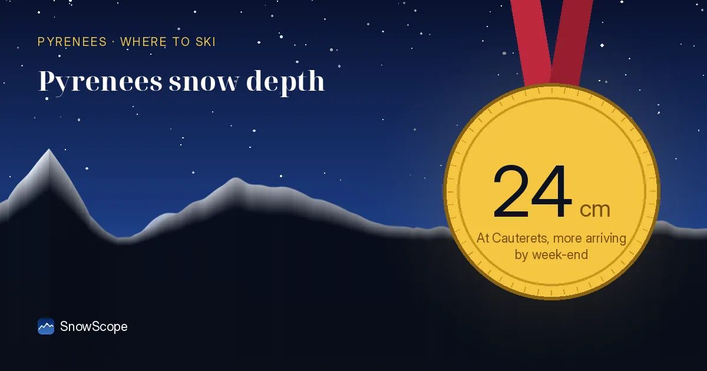

Pyrenees snow depth: 24 cm at Cauterets, more arriving by week-end
Cauterets Cirque du Lys holds the best snow in the Pyrenees today at 24 cm on upper slopes, fed by 12 cm of fresh snow yesterday. By Friday 25 November, a major system will add 26 cm across the range, raising the snow-covered area from 3,460 to 9,560 km2.
See the live snow forecast for Cauterets Cirque du Lys in the SnowScope appSnow depth, powder alerts and the 3D map, free.
Where the snow sits now
Cauterets Cirque du Lys leads with 24 cm at 2,420 m, built from 14 cm over the past three days. The upper slopes there stay above the freezing level (2,240 m today), so snow is stable and dry. Gourette reaches 16 cm at its top (2,453 m), where the freezing level sits at 1,840-1,870 m today, keeping conditions firm.
Height matters sharply. At mid-elevation (around 2,050-2,100 m), depth drops to 1-3 cm at most resorts. At base level, the snow cover is thin or absent. This early-season snow pack is fragile. Stick to groomed pistes where the base is prepared and rocks are less likely to catch your skis.
| Resort | Snow depth | New snow, 72 h | Coming, next days | Top |
|---|---|---|---|---|
| Cauterets Cirque du Lys | 24 cm | 14 cm | 26 cm | 2,420 m |
| Gourette | 16 cm | 13 cm | 25 cm | 2,453 m |
| Gavarnie-Gèdre | 26 cm | 10 cm | 14 cm | 2,283 m |
| Piau-Engaly | 17 cm | 13 cm | 14 cm | 2,527 m |

Water arriving by Friday
The region sits on a dry spell today and tomorrow (1 cm forecast for 23-24 November), but a major storm system moves in on Wednesday 24 November afternoon and peaks on Friday 25 November. SnowScope shows 26 cm arriving at Cauterets in the next three days, with 25 cm at Gourette and 14 cm at the southern resorts (Gavarnie-Gèdre, Piau-Engaly).
By Friday evening, the snow-covered area will jump from 3,460 km2 today to 9,560 km2 forecast. That means 51 of the 53 resorts in the range will have measurable cover, up from 44 now. The freezing level will drop sharply on 25 November (to 1,730-1,980 m across the range), so new snow will fall as powder at all elevations.
Which slopes to ski today and tomorrow
North-facing slopes above 2,200 m are your best bet for the next two days. Cauterets' upper terrain keeps snow longest because the reservoir of ice and older snow sits highest there. Gourette's northern aspects are also solid. The south-facing slopes are thinner and warming daily.
At mid-height (1,900-2,100 m), expect bare patches between runs. The base lifts and low slopes are mostly walking on rocks and grass right now. If your resort has a mid-mountain base camp or higher lift access, use it. Friday's storm will fill gaps, but until then, stay above 2,100 m where SnowScope shows reliable cover.
Timing and safety
Rain risk is low today and tomorrow except on 23 November at Cauterets (freezing level 2,930 m), where wet snow may touch the upper runs briefly. By Friday 25 November, the freezing level crashes to 1,730 m, so new snow will be dry and light at all elevations.
Early-season cover this thin carries avalanche risk on steep slopes with weak layers underneath. Before skiing off-piste or gullies, check the official avalanche bulletin for your area. The best conditions will arrive Friday afternoon and Saturday as the new snow settles.
Tips for skiers
- Ski above 2,200 m today and tomorrow; north-facing runs keep snow longest in thin cover.
- Wait for Friday's storm (26 cm incoming) if you can; conditions will be safer and deeper across the range.
- On 23 November, avoid Cauterets' highest slopes during the warmest hours (freezing level rises to 2,930 m); wet snow is heavy and slower.
- Stick to groomed pistes until Friday; early-season snow is thin and rocks are close to the surface.
- Read the official avalanche bulletin before any off-piste skiing, especially on 25-26 November when new snow loads the slopes.
About these numbers
Resort snow depths are the deepest snow on the resort's upper slopes on the date shown; they are estimates for an area, not a measurement at one point. Forecasts can change. Always read the official avalanche bulletin before going off-piste.
Official avalanche bulletins: Météo-France / Meteocat / AEMET
Cite this report
For research, teaching or the press: the numbers and charts are free to reuse under CC BY 4.0 with this citation.
SnowScope (2026), Pyrenees snow depth: 24 cm at Cauterets, more arriving by week-end, https://snowscope.app/blog/en/2026/11/pyrenees-where-to-ski-best-snow-22-november-2026.html, accessed 2026-11-22
SnowScope (Atlas Labs). (2026, November 22). Pyrenees snow depth: 24 cm at Cauterets, more arriving by week-end. SnowScope snow reports. https://snowscope.app/blog/en/2026/11/pyrenees-where-to-ski-best-snow-22-november-2026.html
BibTeX
@misc{snowscope2026pyreneeswheretoskibestsn,
author = {{SnowScope (Atlas Labs)}},
title = {Pyrenees snow depth: 24 cm at Cauterets, more arriving by week-end},
year = {2026},
month = nov,
howpublished = {\url{https://snowscope.app/blog/en/2026/11/pyrenees-where-to-ski-best-snow-22-november-2026.html}},
note = {Published 2026-11-22 19:35 UTC; accessed 2026-11-22}
}· CC BY 4.0 · Methods, data and tools →
Cauterets Cirque du Lys: snow and temperature by height, this winter vs last (tools) →
Follow Cauterets Cirque du Lys
Free: a message when fresh snow is coming, and the forecast every morning.
More snow reports

Gourette and Cauterets side by side: heights, usual snow by month, the best weeks and how to get there, from 46 past winters.

Gavarnie-Gèdre leads the Pyrenees with 26 cm on upper slopes on 22 November. Snow coverage has tripled in two days across the region.

Piau-Engaly month by month from 46 past winters: usual snow depth at the base, mid-mountain and the top, the late first snow, the February peak and how the small, high resort compares with the big Pyrenean names.